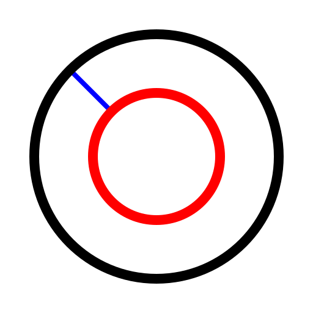

Konzentrisch (Distanz)
Werkzeugleiste / Symbol:


Menü: Zeichnen - Kreis - Konzentrisch (Distanz)
Tastenkürzel: C, C
Kommandos: circleconcentric | cc
Beschreibung:
Mit diesem Werkzeug können Sie Kreise konstruieren, die konzentrisch
zu einem existierenden Kreis sind. Dabei wird die Distanz angegeben.
Vorgehensweise:
- Geben Sie die Distanz des ersten konzentrischen Kreises vom ursprünglichen
Kreis in der Optionenwerkzeugleiste oder in der Kommandozeile ein.
- Geben Sie die Anzahl der zu erstellenden konzentrischen Kreise in der
Optionenwerkzeugleiste ein.
- Klicken Sie den Kreis zu dem die konzentrischen Kreise
konstruiert werden sollen. Die konzentrischen Kreise werden auf derjenigen
Seite des ursprünglichen Kreises konstruiert, auf der sich der Mauszeiger
während dem Klick befindet.